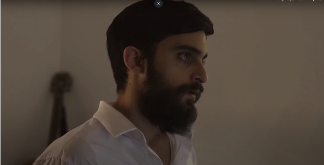

📽️ סרטון 7.1 — ליהוק ומאצ'ינג
*הסרטון הופק ומוצג על ידי טומי כהן - מדריך בפיקוח
ליהוק השחקנים הוא שלב חשוב ביותר בתהליך היצירה שלכם. ראשית, השקעת המאמצים הגדולה שלכם, והתהליך הארוך שעברתם, לא יצליחו אם, לבסוף, ביצועי השחקנים יהיו ברמה ירודה. שנית, יש חשיבות להתאמת השחקנים ולחיבור ביניהם כדי ליצור אותנטיות וחיבור בסיפורכם.

❓ שאלות מנחות
• 1. האם כתבתם את מאפייני הדמות: תכונות, מראה חיצוני וכו'?
• 2. האם פרסמתם מודעה ברשתות החברתיות כדי ללהק שחקנים?
• 3. האם ליהקתם שחקנים אחדים, ולא רק שחקן אחד?
• 4. האם לקחתם בחשבון / בדקתם את רצינותו של השחקן בפרויקט זה?
• 5. האם בדקתם היתכנות של השתתפות השחקן בכל ימי הצילום בתאריכים ובשעות הדרושות?
• 6. האם לצורך הביטחון האישי, שיתפתם את שאר חברי הצוות ואת המורים בליהוק השחקן?
• 7. האם ביקשתם "שואורייל" או תיק עבודות מהשחקן?
📽️ סרטון 7.2 — חזרות
*הסרטון הופק ומוצג על ידי טומי כהן - מדריך בפיקוח
חזרות שחקנים הן חלק אינטגרלי מהפקת הסרט שלכם. בשלב זה עוברים ללימוד הטקסט. אתם בונים את הדמויות, את מערכת היחסים ביניהן, ומפרשים את הסאבטקסט. ככל שתעמיקו ותעשו חזרות רבות יותר, כך תרגישו אתם, היוצרים, והשחקנים, את הצלחת הסרט.
📖 קריאה לבנה
בשלב החזרות הבמאי עובר יחד עם השחקנים "קריאה לבנה" — קריאה שטחית, ללא משחק.
הבמאי כותב לעצמו, טרם הגעתו לחזרה, ליד כל משפט את הסאבטקסט, את מטרת הסצנה, את הרצון והמכשול של כל דמות, ואת היחסים ביניהן.
⚖️ איזון בין חופש לתיווך
מצד אחד — לתת חופש ומרחב יצירתי לשחקנים כדי שיתנו פרשנות משלהם. מצד שני — לתווך לשחקנים את הסיטואציה, את הרגש המוביל בסצנה, ואת המהלך הרגשי שהשחקן עובר.
💡 טיפים לחזרות
🔢 מספר חזרות
רצוי לקיים לפחות 3 חזרות לפני הצילומים. הגעה לחזרות מעידה על רצינות השחקנים ורצינותכם. 3 חזרות יסייעו לעבור היטב על הסצנות העיקריות.
🗣️ ביקורת
הימנעו מביקורת ישירה כמו: "זה לא טוב, אתה לחוץ מדי".
בחרו בחלופה: "אוקיי, בוא ננסה שוב, רק יותר נינוח. תהנה מהרגע, קח את הזמן". שאפו לדיאלוג נינוח של עבודת צוות, כך שהשחקן לא ירגיש שהוא נבחן באופן תמידי.
📝 גמישות התסריט
התסריט אינו חקוק בסלע! אם לשחקן קשה או לא טבעי לומר טקסט או מילה מסוימת — נסו לשנות את המילים כך שהמשמעות תישאר על כנה.
🎭 אימאג'
כשהשחקנים צריכים לשחק משהו לא מוכר — תנו להם דוגמאות מהחיים הפרטיים או מניסיון החיים שלהם.
דוגמה: דמות ששותה רעל וצריכה להגיב — ניתן לתת חלופה מוכרת: סיטואציה של אובדן שליטה, אובדן חושים, סחרור, שיכורות, התחושה שלפני הירידה מרכבת הרים.
⚠️ בטיחות
לעולם אל תישארו לבד עם השחקנים. קבעו חזרות במקום ניטרלי כגון בית הספר, ויידעו את המורים ואף ההורים על מועדי החזרות.
❓ שאלות מנחות
• 1. האם ביצעתם כ-3 חזרות או יותר?
• 2. האם קראתם יחד עם השחקנים את כל התסריט?
• 3. האם כתבתם מהי מטרת הסצנה, ואת הרצון והמכשול של כל דמות?
• 4. האם דיברתם על מערכת היחסים בין הדמויות?
• 5. האם סיפקתם לשחקנים הסברים ודימויים למצב הרגשי שלהם בסצנה?
• 6. האם לצורך ביטחון אישי, קבעתם חזרות עם חברי צוות נוספים ויידעתם את המורה / ההורה?